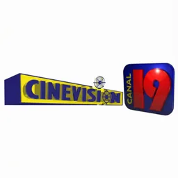

Cinevision Canal 19 En vivo
La señal de Cinevision Canal 19, Canal 19 · República Dominicana, se consulta aquí cuando el stream está disponible.
Cinevision Canal 19 tiene presencia en la radio del país como señales más reconocidas de la televisión dominicana, llevando a los hogares una combinación de entretenimiento, actualidad y cultura. Este canal ha mantenido su presencia en la pantalla nacional, ofreciendo contenidos que acompañan a diversas generaciones.
La programación incluye novelas que han cautivado al público, programas de variedades con talento local y segmentos que reflejan la vida y costumbres del país. Desde espacios de conversación hasta shows musicales, esta emisora consigue mantener un vínculo cercano con su audiencia.
Ya sea para ver tus programas favoritos o descubrir nuevas producciones, esta estación sigue siendo parte del día a día en muchas familias.